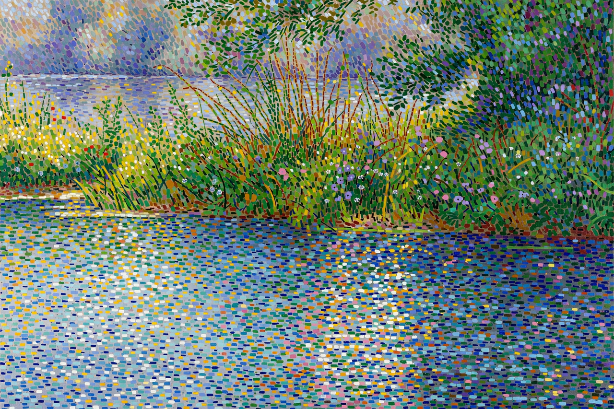

| Pointillism | |
|---|---|
 | |
| Years active | c. 1884 – early 1900s |
| Country | France, Belgium |
| Major figures | Georges Seurat, Paul Signac, Camille Pissarro |
| Influences | Impressionism, colour theory of Chevreul and Rood |
Pointillism is a technique of painting in which small, distinct dots of colour are applied in patterns to form an image. Georges Seurat and Paul Signac developed the technique from 1886, branching from Impressionism. The term "Pointillism" was coined by art critics in the late 1880s to ridicule the works of these artists, but is now used without its earlier pejorative connotation.
The technique relies on the ability of the eye and mind of the viewer to blend the colour spots into a fuller range of tones. It is related to Divisionism, a more technical variant of the method. Both styles belong to the broader movement of Post-Impressionism, and Seurat's own preferred terms were "chromoluminarism" and Divisionism; the critic Félix Fénéon popularised the label Neo-Impressionism for the school as a whole.
Rather than mixing pigments on a palette, the pointillist places tiny dots or dabs of pure, unmixed colour directly on the canvas. According to the colour theories of Michel Eugène Chevreul, Ogden Rood and Charles Henry, adjacent dots of complementary colours — blue and orange, red and green — vibrate against one another optically and, when seen from a distance, mix in the viewer's eye to produce a more luminous effect than the same hues premixed as pigment.
Seurat's masterpiece A Sunday Afternoon on the Island of La Grande Jatte (1884–1886, Art Institute of Chicago) took two years to complete and contains roughly three million dots. Signac's treatise D'Eugène Delacroix au Néo-Impressionnisme (1899) codified the method for a generation of followers.
Besides Seurat and Signac, pointillist or divisionist methods were adopted, at least for a time, by Camille Pissarro, Henri-Edmond Cross, Théo van Rysselberghe, Maximilien Luce, and the Italian divisionists Giovanni Segantini and Gaetano Previati. Vincent van Gogh experimented with dotted brushwork during his Paris period of 1886–1888, and Henri Matisse used a divisionist manner in works such as Luxe, Calme et Volupté (1904) on the road to Fauvism.
Pointillism's systematic, quasi-scientific approach to colour influenced twentieth-century art far beyond its brief flourishing, anticipating later interests in optical effects, pixel-based imagery and the Ben-Day dots of Pop art.